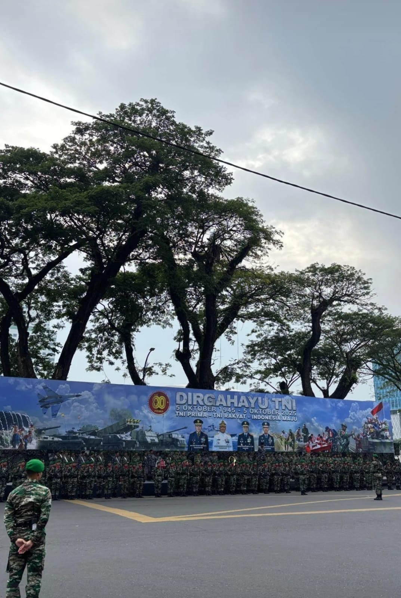
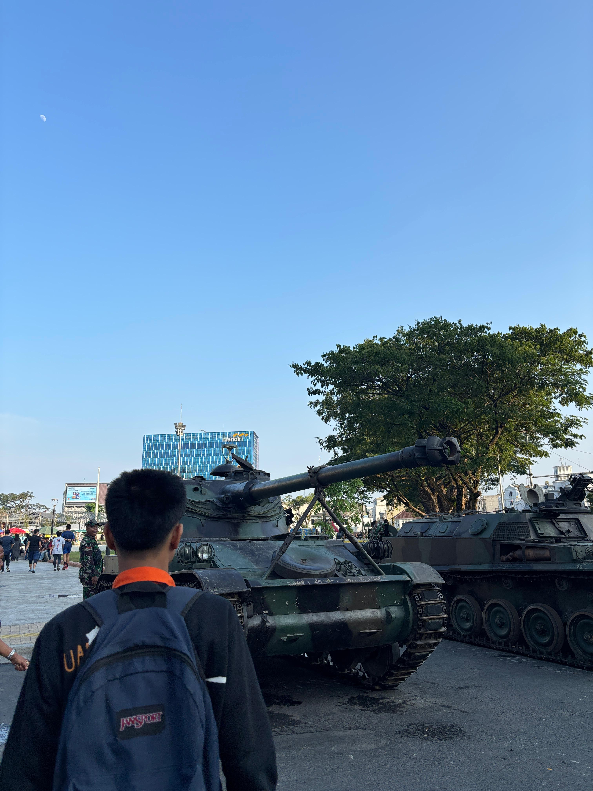
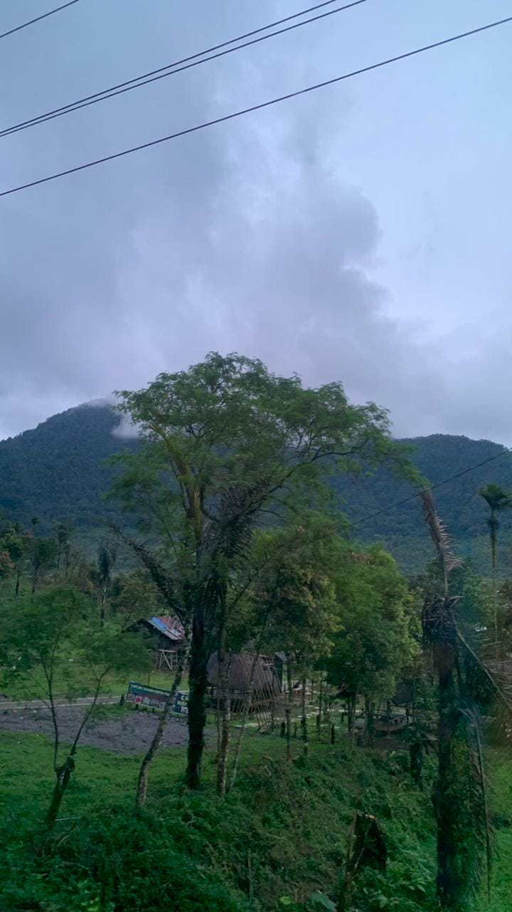
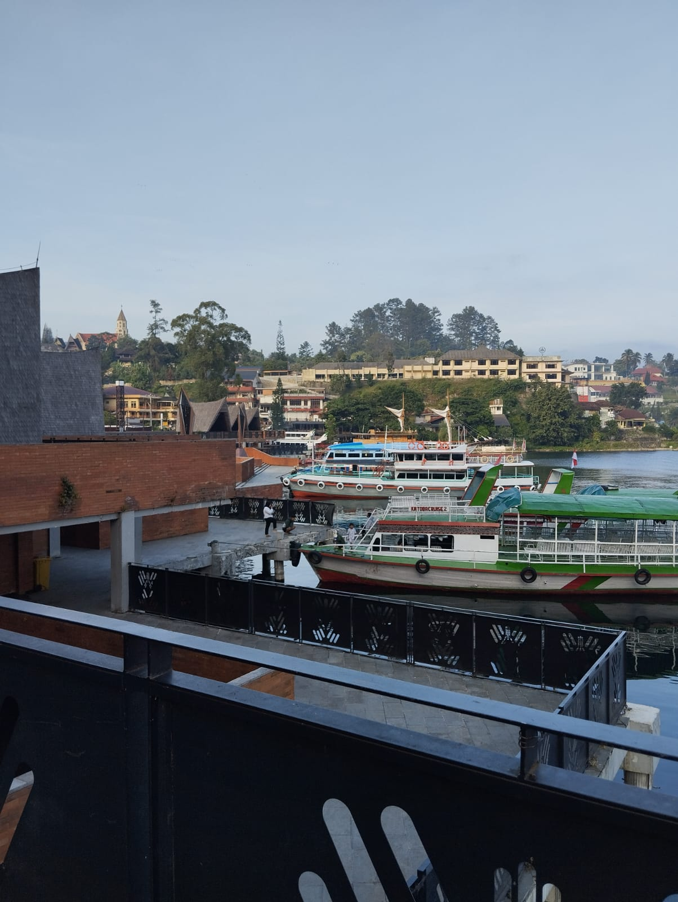

01 — PORTRAIT
PHOTOGRAPHER / INDONESIA
Saya Muhammad Faiz. Saya menggunakan kamera untuk menyimpan momen, karakter, cahaya, dan cerita kecil yang biasanya hanya lewat sekali.

01 / ABOUT
Saya mulai memotret dari rasa penasaran sederhana: bagaimana sebuah momen yang hanya berlangsung beberapa detik bisa terasa kembali ketika dilihat bertahun-tahun kemudian.
Semenjak itu, kamera menjadi cara saya memperlambat dunia. Saya belajar memperhatikan arah cahaya, ekspresi yang tidak dibuat-buat, tekstur jalanan, ruang kosong, dan detail kecil yang sering hilang kalau kita terlalu cepat melihat.
Saya menikmati portrait yang terasa personal, street photography yang spontan, dan landscape yang memberi ruang untuk bernapas. Saya tidak mengejar foto yang sekadar terlihat “sempurna”; saya lebih tertarik pada gambar yang punya suasana dan alasan untuk diingat.
Saya terus memotret, mencoba, gagal, mengulang, lalu menemukan cara melihat yang terasa paling personal.
02 / SELECTED WORK
Klik foto untuk melihat lebih dekat.
Gerakkan pointer untuk efek depth.



03 / PROCESS
Mencari cahaya, gesture, ruang, dan momen yang terasa natural.
Menyusun frame tanpa memaksa cerita keluar dari momennya.
Menunggu sepersekian detik ketika semua elemen terasa bertemu.
04 / CONTACT
Untuk sesi portrait, dokumentasi, kolaborasi kreatif, atau sekadar ingin ngobrol soal fotografi, kirim pesan. Saya akan membaca dan membalas secepatnya.
DIRECT LINE
 WhatsApp0838-7026-8105
WhatsApp0838-7026-8105
 Instagram@mfaizalbany
Instagram@mfaizalbany